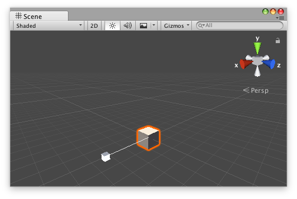

Handles.ScaleSlider
public static float ScaleSlider(float scale,
Vector3 position,
Vector3 direction,
Quaternion rotation,
float size,
float snap);
Parameters
| scale | The value the user can modify. | |
| position | The position of the handle in the space of Handles.matrix. | |
| direction | The direction of the handle in the space of Handles.matrix. | |
| rotation | The rotation of the handle in the space of Handles.matrix. | |
| size | The size of the handle in the space of Handles.matrix. Use HandleUtility.GetHandleSize if you want a constant screen-space size. | |
| snap | The snap increment. See Handles.SnapValue. |
Returns
float The new value modified by the user's interaction with the handle. If the user has not moved the handle, it will return the same value as you passed into the function.
Description 描述
Make a directional scale slider.
This method will draw a 3D-draggable handle on the screen that looks like one axis on Unity's built-in scale tool. The handle will stretch and will scale a single float up and down.

Scale slider handle in the Scene View.
Add the following script to your Assets folder as ScaleSliderExample.cs and add the ScaleSliderExample component to an object in a Scene.
using UnityEngine;
[ExecuteInEditMode] public class ScaleSliderExample : MonoBehaviour { public float scale { get { return m_Scale; } set { m_Scale = value; } } [SerializeField] private float m_Scale = 1f;
public virtual void Update() { transform.localScale = new Vector3(scale, 1f, 1f); } }
Add the following script to Assets/Editor as ScaleSliderExampleEditor.cs and select the object with the ScaleSliderExample component.
using UnityEditor; using UnityEngine;
[CustomEditor(typeof(ScaleSliderExample)), CanEditMultipleObjects] public class ScaleSliderExampleEditor : Editor { public void OnSceneGUI() { ScaleSliderExample example = (ScaleSliderExample)target;
float size = HandleUtility.GetHandleSize(example.transform.position) * 1f; float snap = 0.5f;
EditorGUI.BeginChangeCheck(); float scale = Handles.ScaleSlider(example.scale, example.transform.position, example.transform.right, example.transform.rotation, size, snap); if (EditorGUI.EndChangeCheck()) { Undo.RecordObject(target, "Change Scale Value"); example.scale = scale; example.Update(); } } }